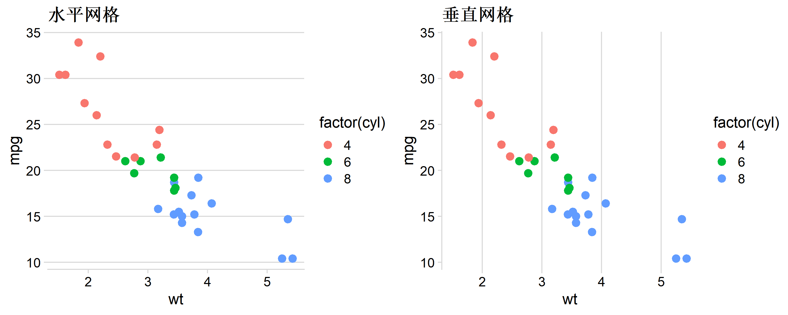
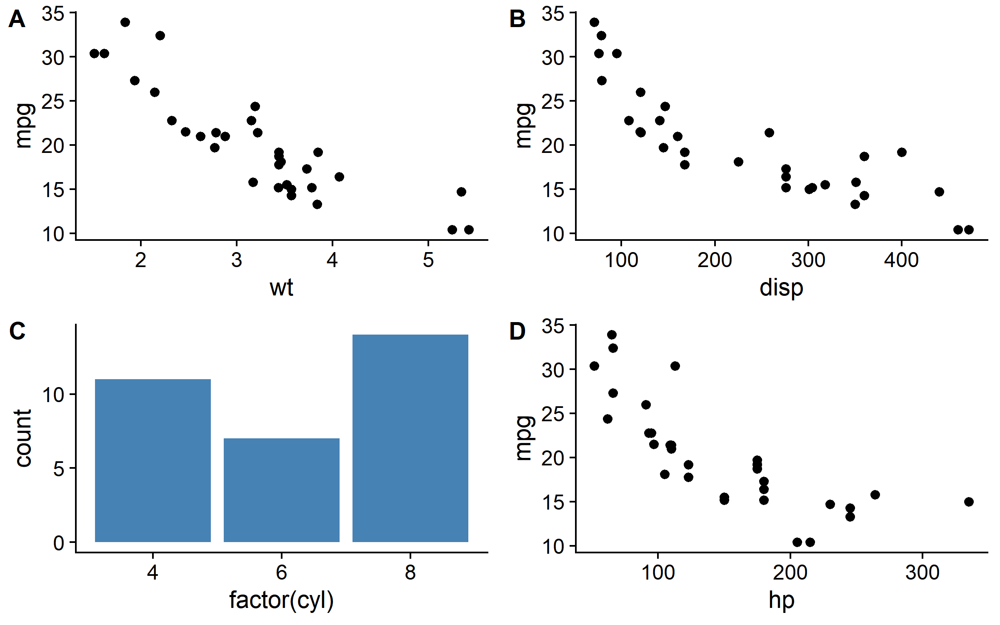
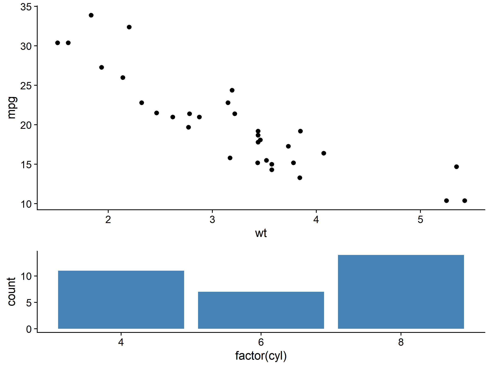
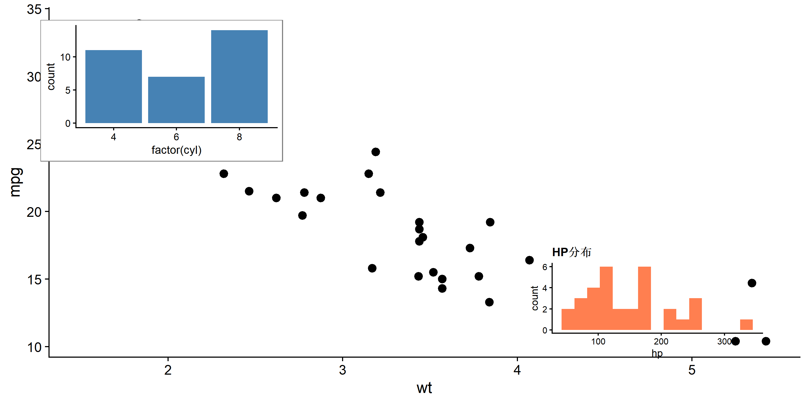
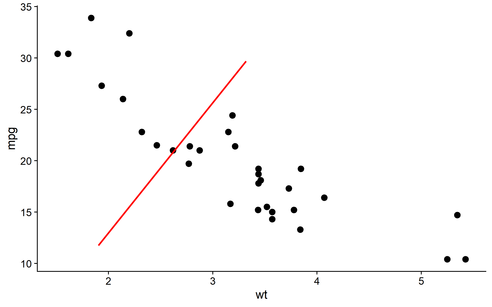
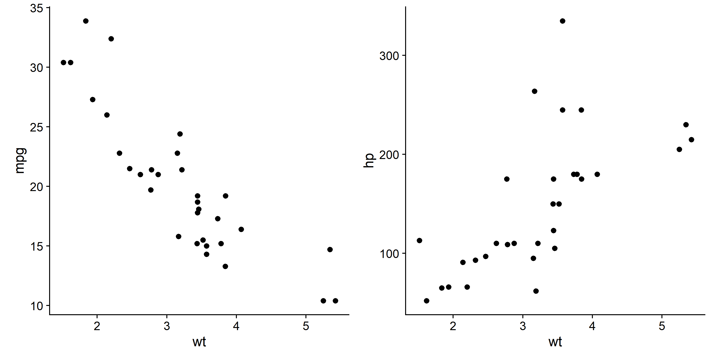

library(ggplot2)
library(cowplot)
library(dplyr)cowplot: 专业图形组合与美化
可视化
ggplot2扩展
简介
cowplot 是 ggplot2 的扩展包，专注于：
- 专业主题：出版级简洁主题
- 图形组合：灵活的多图排列
- 图形嵌入：在图中添加子图
- 标签注释：自动添加 A/B/C 面板标签
- 对齐控制：精确对齐多图坐标轴
主题系统
theme_cowplot - 经典主题
p <- ggplot(mtcars, aes(wt, mpg)) +
geom_point(aes(color = factor(cyl)), size = 3)
# cowplot 经典主题：无网格线，粗坐标轴
p + theme_cowplot(font_size = 12)
theme_minimal_grid - 极简网格
p + theme_minimal_grid(font_size = 12)
theme_minimal_hgrid / vgrid
p1 <- p + theme_minimal_hgrid() + ggtitle("水平网格")
p2 <- p + theme_minimal_vgrid() + ggtitle("垂直网格")
plot_grid(p1, p2, ncol = 2)
theme_half_open - 半开放坐标轴
# 只显示左下坐标轴，适合科研图
p + theme_half_open(font_size = 12)
主题参数详解
p + theme_cowplot(
font_size = 14, # 基础字号
font_family = "", # 字体
line_size = 0.5, # 线条粗细
rel_small = 12/14, # 小字号比例
rel_tiny = 10/14, # 更小字号比例
rel_large = 16/14 # 大字号比例
)
图形组合：plot_grid()
基础组合
p1 <- ggplot(mtcars, aes(wt, mpg)) + geom_point() + theme_cowplot()
p2 <- ggplot(mtcars, aes(disp, mpg)) + geom_point() + theme_cowplot()
p3 <- ggplot(mtcars, aes(factor(cyl))) + geom_bar(fill = "steelblue") + theme_cowplot()
p4 <- ggplot(mtcars, aes(hp, mpg)) + geom_point() + theme_cowplot()
# 2x2 网格
plot_grid(p1, p2, p3, p4, ncol = 2)添加标签
# A/B/C/D 标签
plot_grid(
p1, p2, p3, p4,
ncol = 2,
labels = "AUTO", # 自动 A/B/C/D
label_size = 14, # 标签字号
label_fontface = "bold" # 粗体
)
# 自定义标签
plot_grid(
p1, p2,
labels = c("图 1", "图 2"),
label_size = 12,
label_x = 0.1, # 标签 x 位置 (0-1)
label_y = 0.95 # 标签 y 位置 (0-1)
)
控制相对大小
# rel_widths 控制列宽比例
plot_grid(p1, p3, ncol = 2, rel_widths = c(2, 1)) # 左:右 = 2:1
# rel_heights 控制行高比例
plot_grid(p1, p3, nrow = 2, rel_heights = c(2, 1)) # 上:下 = 2:1
对齐坐标轴
# 不同 y 轴范围的图
pa <- ggplot(mtcars, aes(wt, mpg)) + geom_point() + theme_cowplot()
pb <- ggplot(mtcars, aes(wt, disp)) + geom_point() + theme_cowplot()
# align 参数对齐坐标轴
plot_grid(
pa, pb,
ncol = 2,
align = "h", # 水平对齐 (h/v/hv/none)
axis = "bt" # 对齐哪些轴 (t/b/l/r/tb/lr/tblr)
)
嵌套组合
# 复杂布局：左边一个大图，右边两个小图
right_col <- plot_grid(p2, p3, ncol = 1, labels = c("B", "C"))
plot_grid(p1, right_col, ncol = 2, labels = c("A", ""), rel_widths = c(1.5, 1))
图形嵌入：draw_plot()
在图中嵌入子图
# 主图
main_plot <- ggplot(mtcars, aes(wt, mpg)) +
geom_point(size = 3) +
theme_cowplot()
# 子图（缩略图）
inset_plot <- ggplot(mtcars, aes(factor(cyl))) +
geom_bar(fill = "steelblue") +
theme_cowplot(font_size = 10) +
theme(plot.background = element_rect(fill = "white", color = "grey50"))
# 将子图嵌入主图
ggdraw(main_plot) +
draw_plot(
inset_plot,
x = 0.6, y = 0.6, # 子图左下角位置
width = 0.35, height = 0.35 # 子图尺寸
)
多个嵌入图
# 可嵌入多个子图
inset2 <- ggplot(mtcars, aes(hp)) +
geom_histogram(fill = "coral", bins = 15) +
theme_cowplot(font_size = 9) +
labs(title = "HP分布")
ggdraw(main_plot) +
draw_plot(inset_plot, x = 0.05, y = 0.6, width = 0.3, height = 0.35) +
draw_plot(inset2, x = 0.65, y = 0.1, width = 0.3, height = 0.3)
添加注释
draw_label()
# 添加文字标签
ggdraw(main_plot) +
draw_label(
"R2 = 0.75",
x = 0.8, y = 0.9,
size = 14,
fontface = "bold",
color = "red"
)
draw_image() - 嵌入图片
# 嵌入外部图片（如 logo）
ggdraw() +
draw_image("path/to/logo.png", x = 0.4, y = 0.4, width = 0.2) +
draw_plot(p1)draw_line() - 添加线条
# 添加参考线或箭头
ggdraw(main_plot) +
draw_line(x = c(0.2, 0.5), y = c(0.2, 0.8), color = "red", size = 1)
坐标轴对齐：align_plots()
当图形有不同的坐标轴范围时，plot_grid() 的 align 参数可能不够用，此时使用 align_plots() 更精确。
# 两个 y 轴范围差异大的图
plot_a <- ggplot(mtcars, aes(wt, mpg)) + geom_point() + theme_cowplot()
plot_b <- ggplot(mtcars, aes(wt, hp)) + geom_point() + theme_cowplot()
# 精确对齐
aligned <- align_plots(plot_a, plot_b, align = "hv", axis = "tblr")
plot_grid(aligned[[1]], aligned[[2]], ncol = 2)
保存组合图
save_plot()
# cowplot 提供的保存函数
combined <- plot_grid(p1, p2, p3, p4, ncol = 2, labels = "AUTO")
# 保存为 PNG
save_plot(
"combined_plot.png",
combined,
ncol = 2, # 列数（用于计算尺寸）
nrow = 2, # 行数
base_width = 4, # 每个子图宽度（英寸）
base_height = 3 # 每个子图高度
)
# 保存为 PDF（矢量图）
save_plot("combined_plot.pdf", combined, ncol = 2, nrow = 2)ggsave2() - 增强版 ggsave
# ggsave2 自动处理组合图尺寸
ggsave2("output.png", combined, width = 10, height = 8, dpi = 300)与 ggplot2 facet 对比
| 场景 | 推荐方法 |
|---|---|
| 同一数据的分面 | ggplot + facet_wrap() |
| 不同数据/不同图 | cowplot::plot_grid() |
| 需要不同坐标轴 | cowplot::plot_grid(align = “h”) |
| 需要嵌入子图 | ggdraw() + draw_plot() |
| 复杂嵌套布局 | cowplot 嵌套 plot_grid() |
实战：完整科研图
set.seed(42)
df <- mtcars |> mutate(group = ifelse(mpg > 20, "High", "Low"))
# 图 A: 散点图 + 回归
fig_a <- ggplot(df, aes(wt, mpg)) +
geom_point(aes(color = group), size = 3) +
geom_smooth(method = "lm", se = TRUE, color = "grey40") +
scale_color_manual(values = c("High" = "#E64B35", "Low" = "#4DAF4A")) +
labs(x = "Weight (1000 lbs)", y = "Miles per Gallon", color = "MPG Group") +
theme_half_open() +
theme(legend.position = c(0.8, 0.8))
# 图 B: 箱线图
fig_b <- ggplot(df, aes(factor(cyl), mpg, fill = group)) +
geom_boxplot() +
scale_fill_manual(values = c("High" = "#E64B35", "Low" = "#4DAF4A")) +
labs(x = "Cylinders", y = "MPG", fill = "Group") +
theme_half_open() +
theme(legend.position = "none")
# 图 C: 密度图
fig_c <- ggplot(df, aes(mpg, fill = group)) +
geom_density(alpha = 0.6) +
scale_fill_manual(values = c("High" = "#E64B35", "Low" = "#4DAF4A")) +
labs(x = "MPG", y = "Density") +
theme_minimal_hgrid() +
theme(legend.position = "none")
# 图 D: 柱状图
fig_d <- df |>
count(cyl, group) |>
ggplot(aes(factor(cyl), n, fill = group)) +
geom_col(position = "dodge") +
scale_fill_manual(values = c("High" = "#E64B35", "Low" = "#4DAF4A")) +
labs(x = "Cylinders", y = "Count") +
theme_half_open() +
theme(legend.position = "none")
# 组合：上方大图，下方三个小图
top_row <- fig_a
bottom_row <- plot_grid(fig_b, fig_c, fig_d, ncol = 3, labels = c("B", "C", "D"), label_size = 14)
# 最终组合
final_plot <- plot_grid(
top_row, bottom_row,
nrow = 2,
labels = c("A", ""),
label_size = 14,
rel_heights = c(1.2, 1)
)
final_plot
与 patchwork 对比
| 特性 | cowplot | patchwork |
|---|---|---|
| 语法 | plot_grid(p1, p2) | p1 + p2 / p1 | p2 |
| 图形嵌入 | draw_plot() | inset_element() |
| 坐标轴对齐 | 需手动 align | 自动对齐 |
| 标签添加 | labels = “AUTO” | plot_annotation(tag_levels) |
| 主题系统 | 丰富的专业主题 | 无 |
| 学习曲线 | 中等 | 简单 |
选择建议：
- 需要专业主题 → cowplot
- 快速组合 → patchwork
- 图形嵌入 → 两者均可
- 复杂布局控制 → cowplot
提取与共享图例
# 创建带图例的图
p_legend <- ggplot(mtcars, aes(wt, mpg, color = factor(cyl))) +
geom_point(size = 3) +
scale_color_brewer(palette = "Set1", name = "Cylinders") +
theme_cowplot()
# 提取图例
legend <- get_legend(p_legend)
# 创建无图例的图
p_no_leg1 <- p_legend + theme(legend.position = "none")
p_no_leg2 <- ggplot(mtcars, aes(disp, mpg, color = factor(cyl))) +
geom_point(size = 3) +
scale_color_brewer(palette = "Set1") +
theme_cowplot() +
theme(legend.position = "none")
# 组合：两图共享一个图例
plot_grid(
plot_grid(p_no_leg1, p_no_leg2, ncol = 2),
legend,
ncol = 2,
rel_widths = c(1, 0.15)
)
常用函数速查
| 函数 | 用途 |
|---|---|
| theme_cowplot() | 经典无网格主题 |
| theme_half_open() | 半开放坐标轴 |
| theme_minimal_grid() | 极简网格 |
| plot_grid() | 组合多图 |
| align_plots() | 精确对齐坐标轴 |
| ggdraw() | 创建绑图画布 |
| draw_plot() | 嵌入子图 |
| draw_label() | 添加文字 |
| draw_image() | 嵌入图片 |
| save_plot() | 保存组合图 |
| get_legend() | 提取图例 |
| get_title() | 提取标题 |
总结
cowplot 核心优势：
- 专业主题 - theme_cowplot(), theme_half_open() 直接用于科研图
- 灵活组合 - plot_grid() 支持复杂嵌套布局
- 精确控制 - rel_widths, rel_heights, align 参数
- 图形嵌入 - draw_plot() 轻松添加子图
- 自动标签 - labels = “AUTO” 一键添加面板标签
推荐工作流：
# 1. 创建单图，应用 cowplot 主题
p1 <- ggplot(...) + theme_half_open()
p2 <- ggplot(...) + theme_half_open()
# 2. 组合并添加标签
combined <- plot_grid(p1, p2, labels = "AUTO", align = "hv")
# 3. 保存
save_plot("output.pdf", combined, ncol = 2)